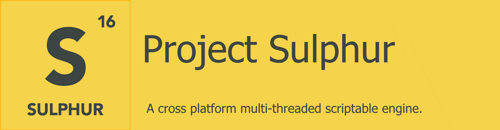
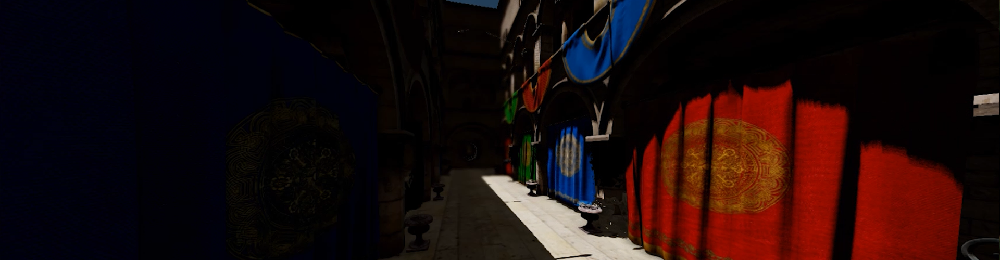
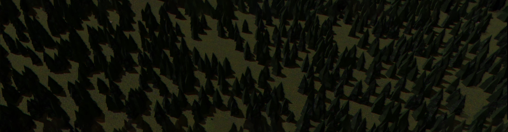
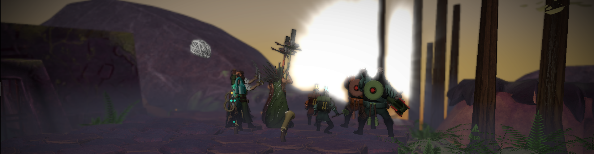
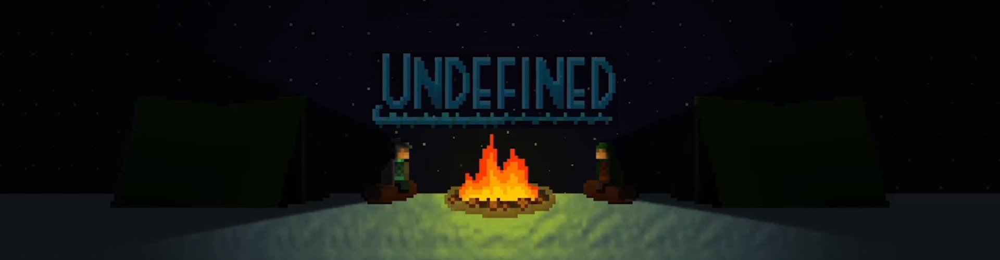
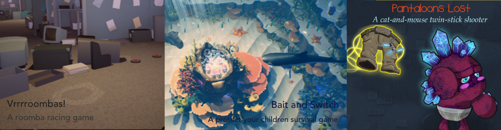

Hilze Vonck
A Graphics & PS4 Programmer
Hilze Vonck | |
hvonck@live.nl | |
| Education | University of Applied Sciences Breda (IGAD) |
| Engines | Unity UE4 |
| Graphics API's | OpenGL DirectX 11 GNM/GNMX |
| Languages | Proficient in Dutch Proficient in English |
| Programming Languages | C++ C# HTML |
| Shader Languages | HLSL GLSL PSSL |
| Version Control Systems | Perforce GIT Turtoise SVN |
About me
My name is Hilze Vonck. I am a third year programming student at University Of Applied Sciences Breda (formerly known as NHTV), following the Bachelor course International Game Architecture and Design (IGAD).
I developed an interest in programming during high school. I taught myself how to create websites using HTML, CSS, PHP and JavaScript. But it did not stop there. While I was learning how to create websites, I quickly figured out that this is something that I highly enjoy. So I bought the book "Beginning C++ Through Game Programming" and I taught myself how to write C++ code.
Once I finished that book and all of its exercises within one week, I spend some time googling how I could continue. Eventually I found out that Simple Fast Multi-media Library (SFML) was one of the easier places to start. And using SFML I have learned how to create games. I have spent about a year creating games with SFML before I started my study at University Of Applied Sciences Breda.
During this education I found out that I highly enjoy graphics programming, so I taught myself how to use OpenGL, DirectX 11 and even GNM(X). This year I am expanding my knowledge of graphics and PS4 programming even more. My team and I are creating a custom cross-platform game engine, further explanation about that under "Project Sulphur".
Experience
I have learned quite a few different things before and during my education at the University Of Applied Sciences Breda.
I am however still gaining knowledge on real-time rendering, multithreading and implementing scripting languages.
My Projects
Project Sulphur
| Duration: | 1 year |
|---|---|
| Team size: | 15 people |
| My roles: | PS4 Lead |
Project Sulphur is a project that I will be working on for the entirety of my third year at IGAD.
Project Sulphur is going to be a cross platform, scriptable engine with multiple graphics and physics implementations. This means that it is possible for you to run the games made in the engine with different renderers and different physics implementations that fit your game the most.
During the first quarter of the year we were tasked to design the engine. This meant that we had to make a Technical Design Document (TDD).
The TDD contained a complete description of what the engine was going to look like without going into any detail.
I have helped with designing the mesh renderer system, the core renderers, the camera systems, the User Interface (UI) system and a few other things.
During the second quarter of the year we have started creating the engine.
I am implementing the PS4 renderer and the UI system.
Creating an engine that works on multiple platforms has been very interesting thus far, because the engine is cross platform it needs to be compiled with multiple compilers. And sometimes this means that errors pop up that only happen on one of the compilers.
These errors are not always visible. The code also behaves slightly different on each compiler.
We had a problem with the releasing of assets for instance. It turned out that the virtual destructor of a parent class was not called, but only with one compiler.
Check out the website here.
Project Lambda
| Duration: | 12 weeks |
|---|---|
| Team size: | 2 people |
| My roles: | Sole programmer |
Project lambda is a personal engine project that I am working on with a friend.
We have been developing this engine for a few months and it is already rich in features.
I started this side project to learn about all the different things that make up an engine. Thus far I have been focusing on graphics, but I'd like to know what else is required to make an engine work.
Thus far I have learned how to implement multiple scripting languages (LUA and C# using Mono).
I have also learned how to design the systems that make the engine function, like for instance the world and the entity component system.
I however have not skipped on the graphics department. These are the post processing effects that I have currently implemented:
Forest Demo
| Duration: | 8 weeks |
|---|---|
| Team size: | 4 people |
| My roles: | DirectX 11 programmer |
The Forest Demo is a project that I have worked on during my second year of IGAD.
This project was the first time that I did DirectX 11 programming. I also wanted to challenge myself even more this block so I have implemented Deferred Rendering.
Deferred Rendering means that you do not draw to the screen directly, instead you draw to a few buffers called the Graphics-Buffer (G-Buffer). This buffer is then used to draw the final scene to the screen.
Since you do not draw to the screen directly, you can easily add post processing effects.
During this project I did not only get a solid foundation on how DirectX 11 works, I have also learned how to implement a few post processing effects.
About a year after we finished this project I have revisited it and I have added a few post processing effects.
This is what the game looks like:

Day
Night
Nebelkampf
| Duration: | 8 weeks |
|---|---|
| Team size: | 15 people |
| My roles: | DirectX 11 programmer |
Nebelkampf is an online multiplayer strategy game in which you have to move your pawns around through the fog of war, seek and destroy the enemies.
You have to use each pawns unique field of vision to find out where the enemies are located and bring them down.
This project was different than most other projects since it required us to work in teams of 15. This required us to communicate very clearly on who was doing what and how it was going to affect other people.
During these 8 weeks I have learned how to implemented various post processing effects using DirectX 11, and I have learned how to communicate with artists about their requirements and needs.
These are the post processing effects that I have implemented:
Here you can see a comparison between the game without my post processing effects and with my post processing effects. (PBR is enabled in both images)

Without Post-Processing
With Post-Processing
Undefined Game
| Duration: | 10 weeks |
|---|---|
| Team size: | 1 person |
| My roles: | Sole programmer |
Undefined started as a continuation of a school project that I worked on during my second year of IGAD.
This project was a 2D rogue-like with procedurally generated levels which would run on both PC and PS4. This project was also the first time that I had worked with the PS4. This project had many of the same effects as Undefined Game has.
Undefined game was a hobby engine project that I made during my second year of IGAD. This game was created in a custom game engine that was being developed alongside the game.
I mainly wanted to learn how to do 2D shadow mapping, LUA scripting and procedural generation.
Undefined is a game in which you have to fight your way through procedurally generated icy terrain. Pick either the ranger or sorcerer playable character and fight your way through the snowy terrain.
Each character has a different move set for you to master.
The engine had a few post processing effects.
Here is a demo of what the game looks like.
Game Marmalades
| Duration: | 2 weeks per game |
|---|---|
| Team size: | 8 people |
| My roles: | AI programmer |
During my second year at IGAD we were tasked to create three games in a game jam kind of style.
For each game we had two weeks, or about 50 hours worth of time per person. During this time we had to come up with a design based upon a constraint and create the game.
All of the games were made in Unreal Engine 4 (UE4).
The constraint of the first game was Custom Controller.
We had to create a game that used a custom controller. We came up with many crazy ideas for controllers, but eventually we settled on a wheel chair controller. This allowed us to make a game with tank controls.
Eventually I came up with the idea to create a game about roombas. They have two wheels so we can use the tank controls.
That idea resulted in Vrrrroombas!. A roomba racing game set in a post party office. The employees set up a track through the office that the roombas had to race through.
I made the roomba racing Artificial Intelligence (AI) for this game.
This game was made in Unreal Engine 4 (UE4) in C++.
The constraint of the second game was Cognitive Dissonance.
This was a difficult constraint. Almost no one knew what it actually meant. But we figured it out and eventually settled on a game in which you are a mother fish.
You're tasked with protecting your children but there are dangerous sharks out there that want to find and eat your children.
The only way to protect your children is by throwing them out of the nest to distract the shark. They will slowly come back, but they might get eaten along the way.
I made the shark AI.
This game was made in Unreal Engine 4 (UE4) in Blueprints.
The constraint of the third game was an image. The image portrayed a demon being bullied by angels. The angels had the demons pants and were laughing.
We had many different game ideas and some of them had demos.
For instance, we had a bullfighting game in which one player played as the matador and the other player as the bull.
Or a stealth game where you are a student that took a shower after gym and someone stole your clothes and you have to sneak back to your dorm.
But our product owner decided that a twin stick shooter in which one player was an angel and the other player was a demon was the better idea.
This eventually turned into Pantaloons Lost. Which was a cat-and-mouse twin-stick shooter.
I made the AI of the angels that support the angel player.
This game was made in Unreal Engine 4 (UE4) in Blueprints.